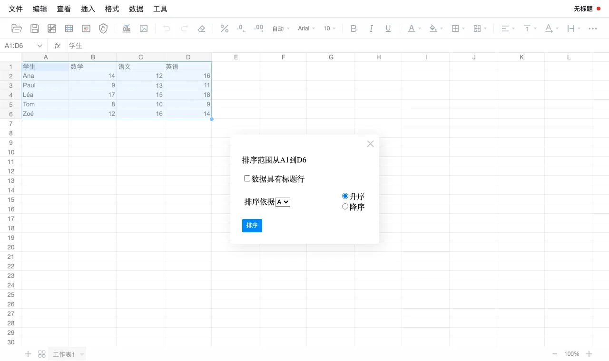
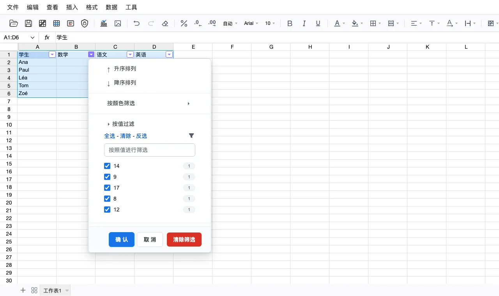
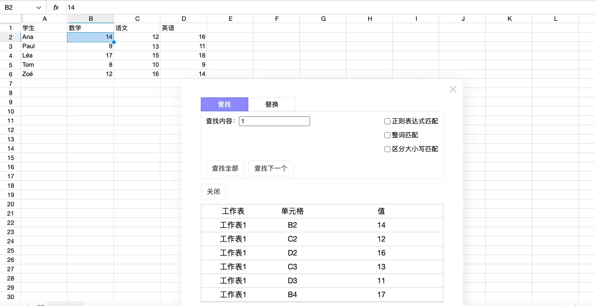

排序、筛选、查找
排序
| 命令 | 效果 |
|---|---|
| 数据 › 排序和筛选 › 升序、降序 | 按选区的第一列排序；也可用 和右键 |
| 右键 › 排序选区 | 选择排序列、顺序，以及第一行是否为标题 |

请选择整个表，而不是单独一列：各行必须保持完整。含合并单元格的区域不能排序。
筛选
- 选择表，包括标题。
- 数据 › 排序和筛选 › 筛选，或 ，或右键 › 筛选选区。
- 单击某列的箭头。

| 列的菜单 | 效果 |
|---|---|
| 升序排列、降序排列 | 对表的行排序 |
| 按颜色筛选 | 按填充颜色或文字颜色 |
| 按值过滤 | 勾选要保留的值；全选、清除、反选；输入框用于查找值 |
| 确 认 | 应用 |
| 清除筛选 | 移除表的筛选 |
被排除的行只是隐藏，不会删除。多列的筛选同时生效。数据 › 排序和筛选 › 清除筛选 移除筛选。
查找、替换
Ctrl F 打开 查找，Ctrl H 打开 替换。

| 选项 | 效果 |
|---|---|
| 正则表达式匹配 | 查找的文本是正则表达式：^A 找到以 A 开头的内容 |
| 整词匹配 | 整个单元格等于该文本 |
| 区分大小写匹配 | 区分大小写 |
| 查找全部 | 列出找到的单元格；单击一行即可跳转 |
| 查找下一个 | 转到下一个 |
| 替换、全部替换 | 一个单元格、全部 |
查找范围是当前显示的工作表。